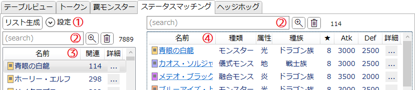
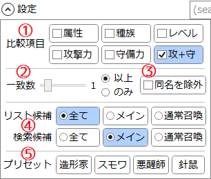

「ステータスマッチング」タブ
指定されたモンスターと特定のステータスが一致するモンスターを調べるためのタブです。
説明

-
リスト生成
- このタブは初期状態では何も表示されていません。
- 「リスト生成」ボタンを押すと、「設定」に従って候補リストを生成します。
- 「設定」の方法は下記設定方法を参照してください。
-
サーチバー
- リストの内容の絞り込みや並べ替えを行います。
-
テキストボックスに入力してEnterを押すとテキスト検索を適用します。
詳しくは検索ウィンドウ/文字列検索を参照してください。 -
 : 検索ウィンドウを開きます。
: 検索ウィンドウを開きます。
-
 : 絞り込みを解除します。
: 絞り込みを解除します。
- サーチバーの右端には、現在そのリストに表示されている項目の数が表示されます。
- 候補リストと検索リストの絞り込み内容は独立しています。
-
候補リスト
-
特定ステータスの一致するカードが1枚以上あるカードが一覧されます。
- 詳しい条件は下記設定方法を参照してください。
- Shiftキーを押しながら項目をクリックすると、山括弧《》で囲ったカード名がクリップボードにコピーされます。
-
ヘッダー(「名前」などが書かれている部分)をクリックすると、それを基準として項目をソート(並べ替え)します。
- ソートを解除(ID順にソート)したい場合は「詳細」のヘッダーをクリックしてください。
-
特定ステータスの一致するカードが1枚以上あるカードが一覧されます。
-
検索リスト
-
左のリストで選択されたカードと特定ステータスが一致するカードが一覧されます。
- 詳しい条件は下記設定方法を参照してください。
- Shiftキーを押しながら項目をクリックすると、山括弧《》で囲ったカード名がクリップボードにコピーされます。
-
ヘッダー(「名前」などが書かれている部分)をクリックすると、それを基準として項目をソート(並べ替え)します。
- ソートを解除(ID順にソート)したい場合は「詳細」のヘッダーをクリックしてください。
-
左のリストで選択されたカードと特定ステータスが一致するカードが一覧されます。
設定方法

-
比較項目
- 一致するかどうかを判定したいステータスにチェックを入れます。
- 「レベル」にチェックを入れると、エクシーズモンスターは候補から除外されます。
- 「レベル」「守備力」「攻+守」のいずれか1つ以上にチェックを入れると、リンクモンスターは候補から除外されます。
- 「攻+守」にチェックを入れると、攻撃力または守備力が「?」のモンスターは候補から除外されます。
-
一致数
- 上でチェックを入れたステータスのうち、いくつが一致すればよいかを指定します。
-
同名を除外
- チェックを入れると、自分自身を検索候補から除外します。
- チェックを入れていない場合、検索リストにはそのカード自身が含まれる場合があります。
-
候補タイプ
-
検索対象となるカードタイプを指定します。
- メイン：メインデッキに入るモンスター(儀式を含む)のみが候補になります。
- 通常召喚：通常召喚可能なモンスターのみが候補になります。
- 「リスト候補」は候補リスト(左)に表示するカード、「検索候補」は検索リスト(右)に表示するカードのタイプを指定します。
-
検索対象となるカードタイプを指定します。
-
プリセット
- ボタンを押すとその内容に従って設定されます。
-
造形家：《魂の造形家》
- 比較項目：攻+守
- リスト候補：全て、検索候補：メイン
-
スモワ：《スモール・ワールド》
- 比較項目：属性、種族、レベル、攻撃力、守備力
- 一致数：1つのみ
- リスト候補：メイン、検索候補：メイン
-
悪醒師：《悪醒師ナイトメルト》
- 比較項目：属性、種族、レベル、攻撃力、守備力
- 一致数：5つ以上(全て)
- 同名を除外
- リスト候補：全て、検索候補：全て
-
針鼠：《レスキューヘッジホッグ》
- 比較項目：属性、種族、レベル
- 一致数：3つ以上(全て)
- 同名を除外
- リスト候補：通常召喚、検索候補：通常召喚